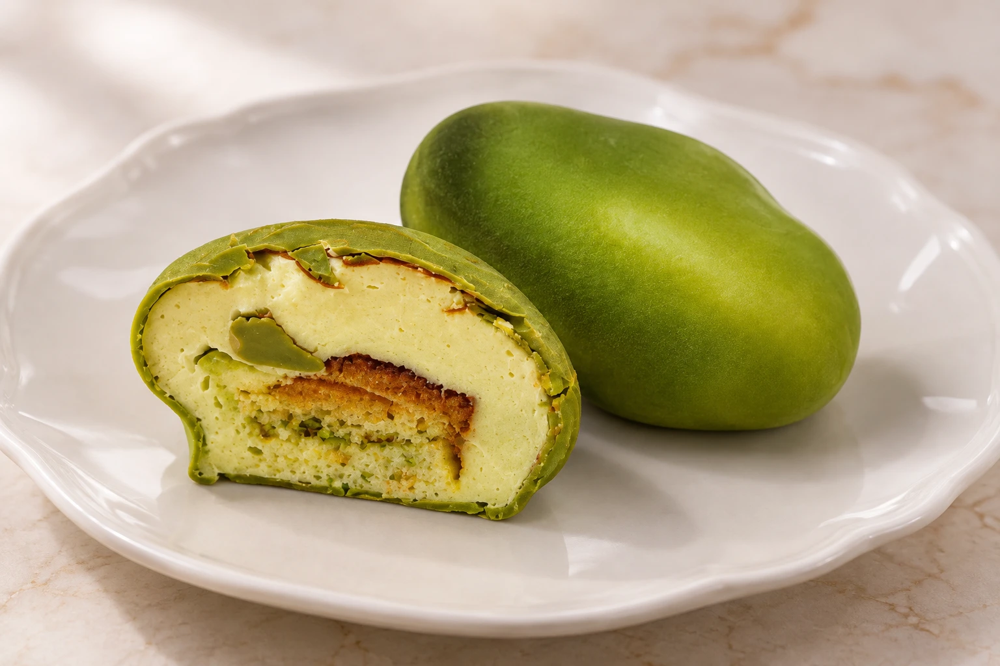

Маленькая форма. Большое удовольствие.
Красиво
снаружи.
Нежно внутри.
Тонкая оболочка, воздушный мусс
и начинка, в которую влюбляешься
с первой ложки.
Корпусные десерты · Коллекция вкусов
Сначала — глазами.Потом — с удовольствием.
Коллекция корпусных десертов
Какой вкус — ваш?
Знакомая форма.
Неожиданно нежная история внутри.

У каждого вкуса есть глубина
Маленькая
история
в трёх слоях.
- 01 Тонкая оболочка
- Первый лёгкий надлом — и десерт раскрывает свой характер.
- 02 Воздушная нежность
- Мягкий крем или мусс, который хочется смаковать медленно.
- 03 Самое интересное внутри
- Ягодная сердцевина, фруктовая начинка или фисташковое пралине.
Эклерная Елены Токаревой